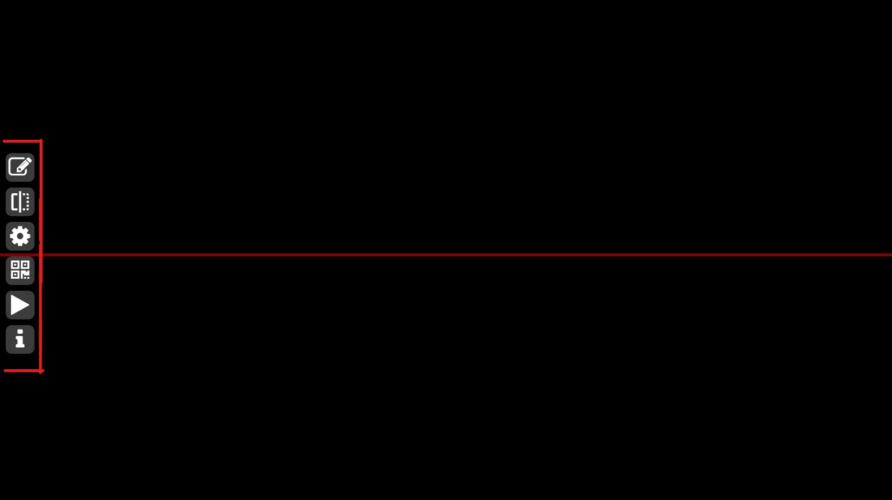
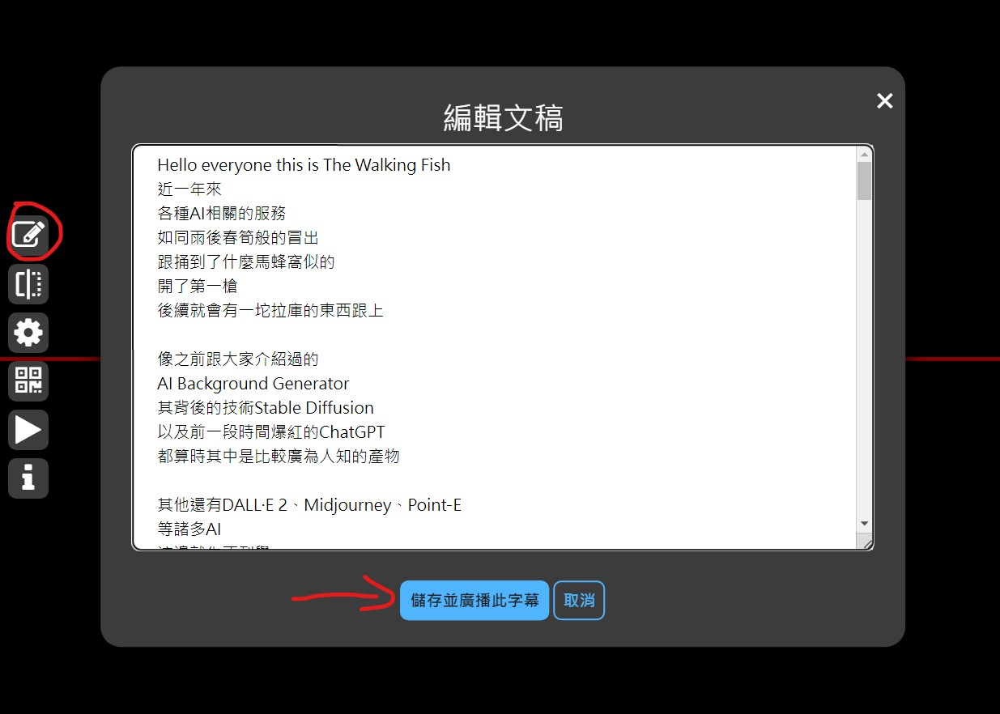
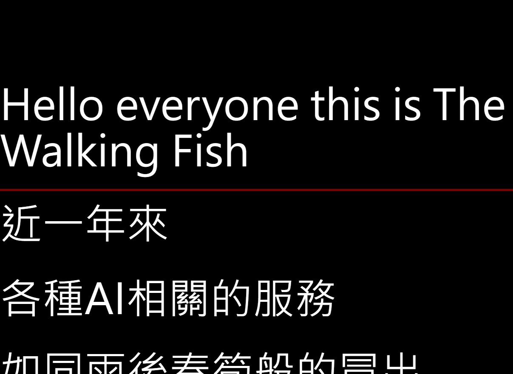
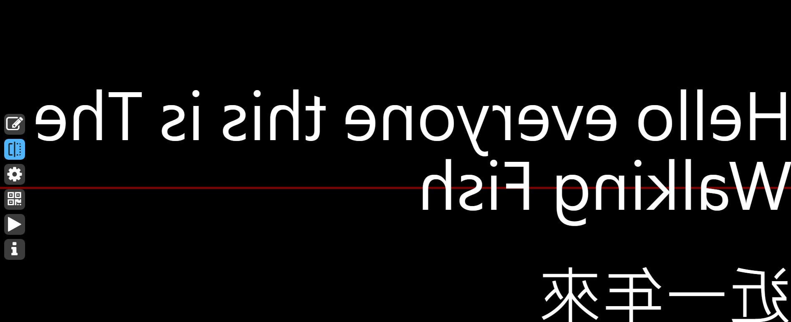
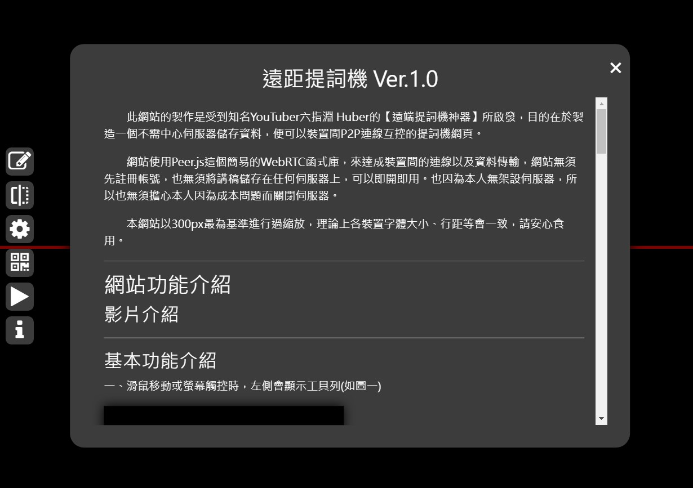
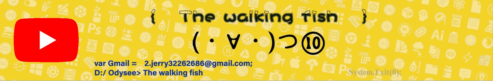

網頁簡介
此網站的製作是受到知名YouTuber六指淵 Huber的【遠端提詞機神器】所啟發，目的在於製造一個不需中心伺服器儲存資料，便可以裝置間P2P連線互控的提詞機網頁。
網站使用Peer.js這個簡易的WebRTC函式庫，來達成裝置間的連線以及資料傳輸，網站無須先註冊帳號，也無須將講稿儲存在任何伺服器上，可以即開即用。因為本人無架設伺服器，所以無須擔心本人因為成本問題而關閉伺服器。
本網站以300px最為基準進行過縮放，理論上各裝置字體大小、行距等會一致，請安心食用。
關於作者
本人目前為一個大學生，做這些Side Project一方面是好玩，然後可以作為個人YouTube頻道【The walking fish】的題材(偷推廣一下)，一方面是希望可以放在未來的履歷內，希望這個網站可以幫助到需要的人。
若對網站有任何改進的建議，可以寄信至以下Email信箱，我會視情況進行調整(如果有想要贊助也可以寄Email，但贊助版位在這個網站其實也只剩下這裡可以放啦www)。
Email: 2.jerry32262686@gmail.com
網站功能介紹
影片介紹
【上片再補】
基本功能介紹
一、滑鼠移動或螢幕觸控時，將會開啟手動操作模式，並且左側會顯示工具列(如圖一)，超過5秒無操作則會進入被控制模式。
二、工具列最上方的按鈕為文稿編輯，在裡面可以放入欲顯示的文稿，完成編輯後，點擊【儲存並廣播此字幕】，便可讓文稿顯示在畫面上(如圖二、圖三)。
 三、工具列第二個按鈕為左右鏡像，使文字可正常於提詞機上顯示(如圖四)。
四、工具列第三個按鈕為設定，可控制文字大小、行距、間距、自動播放速度(如影片一)。
五、工具列第四個按鈕為裝置連線，只要掃瞄QR Code或是至其他裝置開啟分享連結，便可使裝置連線互相操作(如影片二)。
六、工具列第五個按鈕為自動播放(如影片三)。
七、工具列第六個按鈕為網站資訊(你都點進來了，看來應該是沒問題)，這裡有基本功能介紹，然後底部有更新日誌。
連線互控功能介紹
一、要使用連線互控功能，首先需要點擊工具列的QR Code圖標(第四個按鈕)，掃瞄QR Code或是至其他裝置開啟分享連結，在開啟後點擊確認連線，便可使裝置建立連線，互相控制(如影片二)。
二、請注意，若有新連線的裝置，需在有字幕的裝置上重新至【文稿編輯頁面】，點擊【儲存並廣播此字幕】，重新發送給各裝置字幕。
贊助版位

更新日誌
Ver 1.2 修復編輯文稿頁面的空白鍵Bug、以及字體統一改用Noto Sans TC
Ver 1.1 修改部分設定的預設值
Ver 1.0 網頁發布